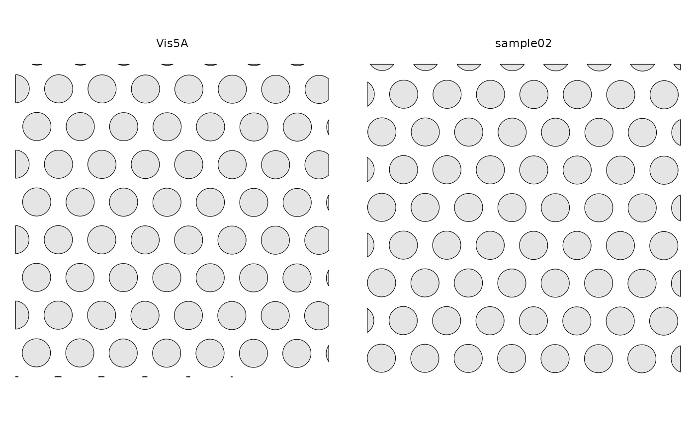
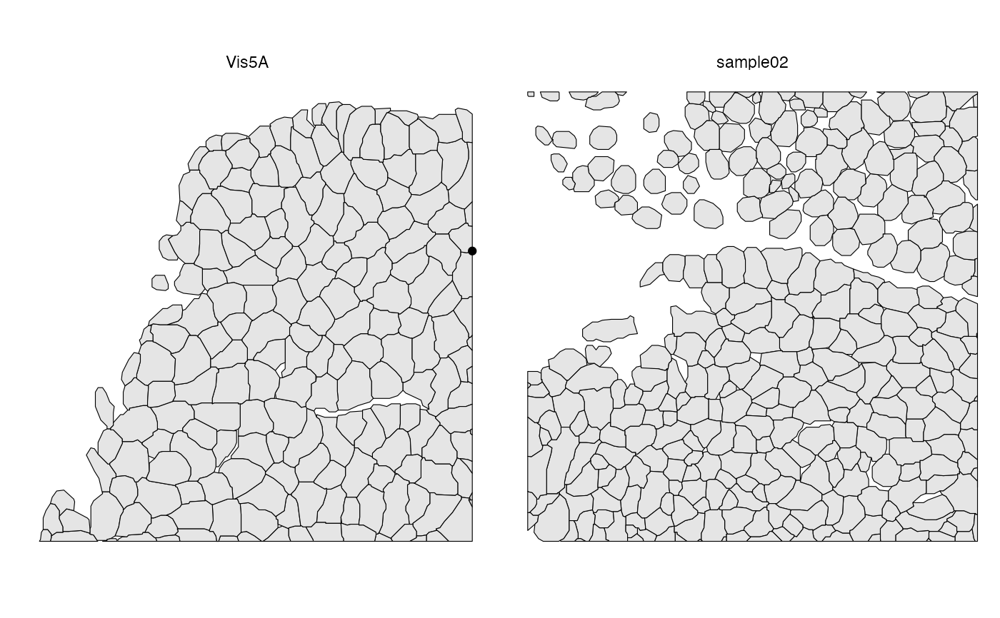

Different samples are plotted in separate facets. When multiple geometries
are plotted at the same time, they will be differentiated by color, by
default using the dittoSeq palette, but this can be overridden with
scale_color_* functions. Transcript spots of different genes are
differentiated by point shape if plotted, so the number of genes plotted
shouldn't exceed about 6 or a warning will be issued.
Usage
plotGeometry(
sfe,
type = deprecated(),
MARGIN = deprecated(),
colGeometryName = NULL,
annotGeometryName = NULL,
rowGeometryName = NULL,
gene = "all",
sample_id = "all",
fill = TRUE,
ncol = NULL,
bbox = NULL,
tx_alpha = 1,
tx_size = 1,
tx_file = NULL,
image_id = NULL,
channel = NULL,
maxcell = 5e+05,
show_axes = FALSE,
dark = FALSE,
palette = colorRampPalette(c("black", "white"))(255),
normalize_channels = FALSE
)Arguments
- sfe
A
SpatialFeatureExperimentobject.- type
Name of the geometry associated with the MARGIN of interest for which to compute the graph.
- MARGIN
Just like in
apply, where 1 stands for row, 2 stands for column. Here, in addition, 3 stands for annotation, to query theannotGeometries, such as nuclei segmentation in a Visium data- colGeometryName
Name of a
colGeometrysfdata frame whose numeric columns of interest are to be used to compute the metric. UsecolGeometryNamesto look up names of thesfdata frames associated with cells/spots.- annotGeometryName
Name of a
annotGeometryof the SFE object, to annotate the gene expression plot.- rowGeometryName
Name of a
rowGeometryof the SFE object to plot.- gene
Character vector of names of genes to plot. If "all" then transcript spots of all genes are plotted.
- sample_id
Sample(s) in the SFE object whose cells/spots to use. Can be "all" to compute metric for all samples; the metric is computed separately for each sample.
- fill
Logical, whether to fill polygons.
- ncol
Number of columns if plotting multiple features. Defaults to
NULL, which means using the same logic asfacet_wrap, which is used bypatchwork'swrap_plotsby default.- bbox
A bounding box to specify a smaller region to plot, useful when the dataset is large. Can be a named numeric vector with names "xmin", "xmax", "ymin", and "ymax", in any order. If plotting multiple samples, it should be a matrix with sample IDs as column names and "xmin", "ymin", "xmax", and "ymax" as row names. If multiple samples are plotted but
bboxis a vector rather than a matrix, then the same bounding box will be used for all samples. You may see points at the edge of the geometries if the intersection between the bounding box and a geometry happens to be a point there. IfNULL, then the entire tissue is plotted.- tx_alpha
Transparency for transcript spots, helpful when the transcript spots are overplotting.
- tx_size
Point size for transcript spots.
- tx_file
File path to GeoParquet file of the transcript spots if you don't wish to load all transcript spots into the SFE object. See
formatTxSpotson generating such a GeoParquet file.- image_id
ID of the image to plot behind the geometries. If
NULL, then not plotting images. UseimgDatato see image IDs present. To plot multiple grayscale images as different RGB channels, use a named vector here, whose names are channel names (r, g, b), and values are image_ids of the corresponding images. The RGB colorization may not be colorblind friendly. When plotting multiple samples, it is assumed that the same image_id is used for each channel across different samples.- channel
Numeric vector indicating which channels in a multi-channel image to plot. If
NULL, grayscale is plotted if there is 1 channel and RGB for the first 3 channels. The numeric vector can be named (r, g, b) to indicate which channel maps to which color. The RGB colorization may not be colorblind friendly. This argument cannot be specified whileimage_idis a named vector to plot different grayscale images as different channels.- maxcell
Maximum number of pixels to plot in the image. If the image is larger, it will be resampled so it have less than this number of pixels to save memory and for faster plotting. We recommend reducing this number when plotting multiple facets.
- show_axes
Logical, whether to show axes.
- dark
Logical, whether to use dark theme. When using dark theme, the palette will have lighter color represent higher values as if glowing in the dark. This is intended for plotting gene expression on top of fluorescent images.
- palette
Vector of colors to use to color grayscale images.
- normalize_channels
Logical, whether to normalize each channel of the image individually. Should be
FALSEfor bright field color images such as H&E but should set toTRUEfor fluorescent images.
Examples
library(SFEData)
sfe1 <- McKellarMuscleData("small")
#> see ?SFEData and browseVignettes('SFEData') for documentation
#> loading from cache
sfe2 <- McKellarMuscleData("small2")
#> see ?SFEData and browseVignettes('SFEData') for documentation
#> downloading 1 resources
#> retrieving 1 resource
#> loading from cache
sfe <- cbind(sfe1, sfe2)
sfe <- removeEmptySpace(sfe)
plotGeometry(sfe, colGeometryName = "spotPoly")

plotGeometry(sfe, annotGeometryName = "myofiber_simplified")
